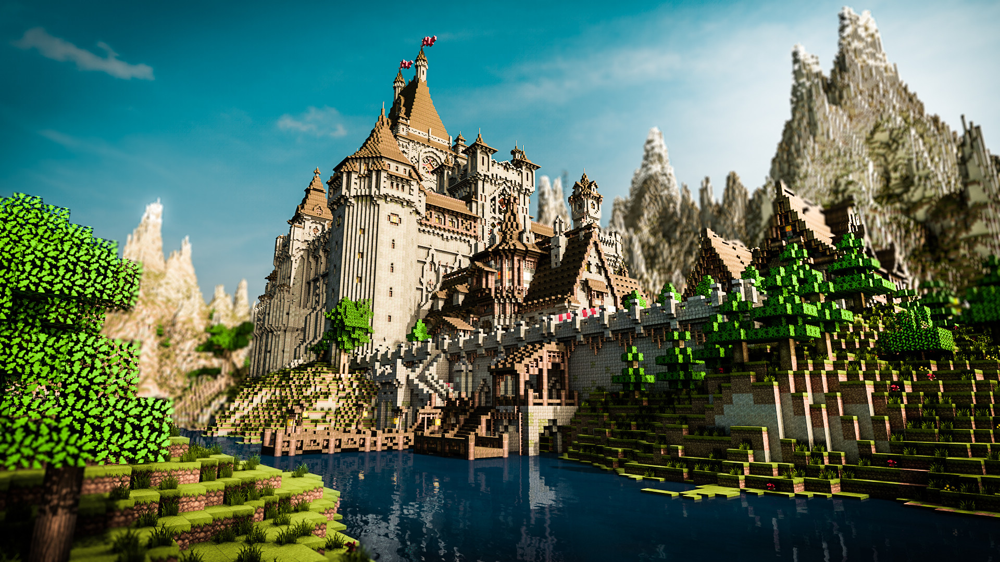
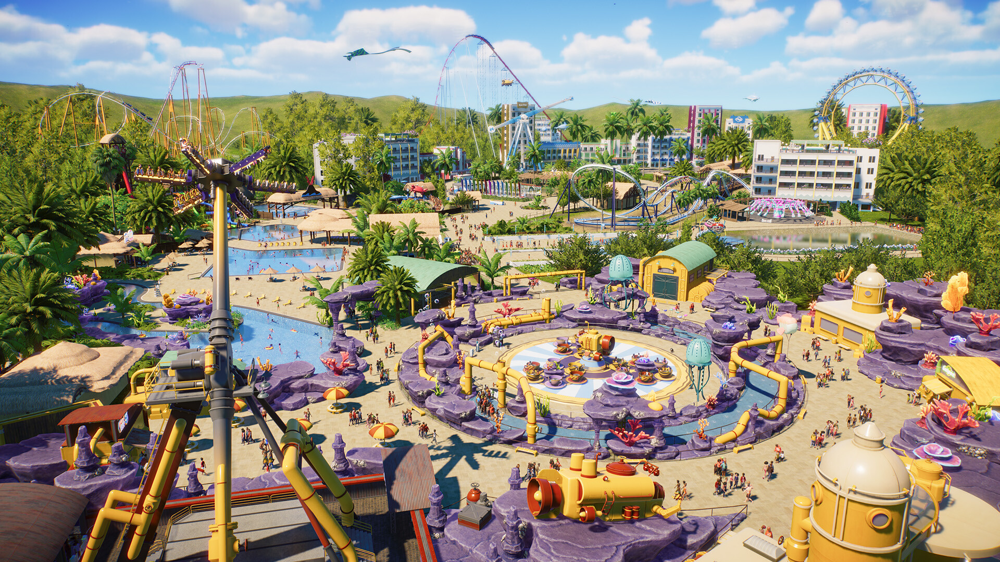

Creativity Beyond the Screen
Some games give players an entire world and let them decide what to do with it.
One of the most interesting things about video games is the freedom they give players. Instead of simply following a story or completing objectives, some games allow us to build, experiment, and create something of our own.
Build Without Limits
Minecraft
Minecraft is a great example of how a video game can become a creative tool. Players can build almost anything they imagine, from small houses to entire cities. The game gives everyone the same basic tools, but what they create with them is completely different.
Explore Minecraft
Design Your Own Experience
Planet Coaster 2
Planet Coaster 2 takes creativity in a different direction. Players can design roller coasters, build theme parks, and control almost every detail of the experience. It combines architecture, design, management, and imagination into one interactive experience.
Explore Planet Coaster 2
Behind Every Game Is a Studio
Video games are made by teams of artists, designers, writers, programmers, and many other creative people. These studios bring the worlds we explore to life.
Explore the map to see where video game studios are located.
Creativity in Motion
Take a look at how players can design and build their own experiences in Planet Coaster 2.
What Kind of Player Are You?
Everyone experiences video games differently. Answer these questions to find out what kind of game experience might fit you best.